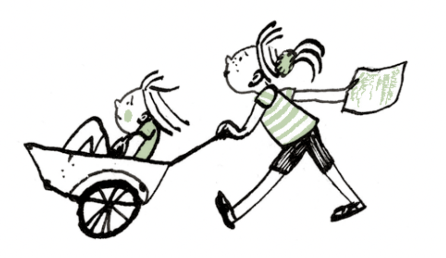
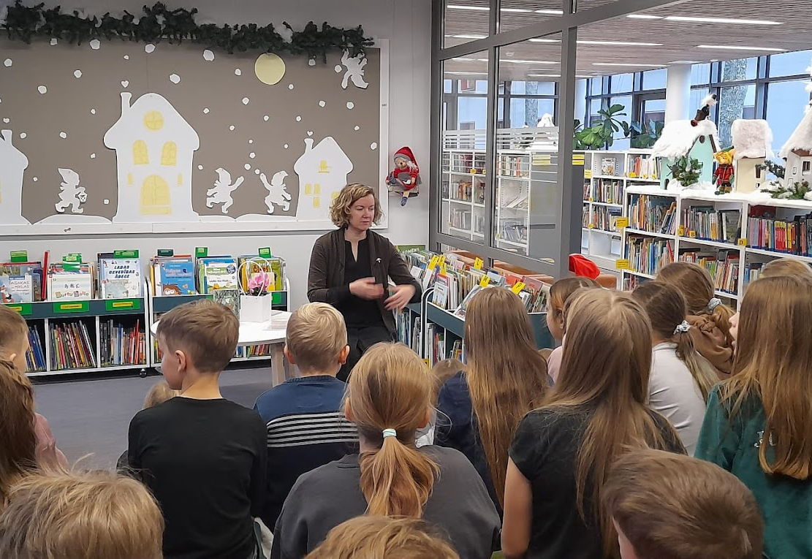

Rakstniecība
Kā humanitāro zinātņu pētniecei manas profesionālās dzīves centrā ir pētnieciskais darbs, taču brīvajā laikā ar lielu prieku rakstu literatūru bērniem. Šobrīd ir publicētas divas manas bērnu grāmatas. 2025. gadā mana grāmata "Draugi un kaimiņi" saņēma Latvijas literatūras gada balvu, nomināciju starptautiskajai Jāņa Baltvilka balvai bērnu un jauniešu literatūrā, kā arī LSM.LV lasītāju simpātijas balvu.

Draugi un kaimiņi
Bērnu literatūra


Dokumentālā literatūra


Tikšanās ar lasītājiem
Līdztekus radošajai rakstniecībai es mēdzu doties arī uz bibliotēkām un skolām, lai tiktos ar jaunajiem lasītājiem. Mūsu sarunas ir ne tikai par manām grāmatām. Tās aptver daudz plašāku jautājumu loku, kas lielākoties saistās ar dzīves pierakstīšanu. Kāpēc mēs mēdzam rakstīt dienasgrāmatas un kas tajās ir tik vērtīgs? Kurā brīdī var rakstīt savu dzīvesstāstu un atmiņas? Ko rakstījuši cilvēki savās dienasgrāmatās pirms 100, 50 un 30 gadiem? Kas ir dzimtas dokumentārais mantojums un kāpēc to vajag saglabāt? Sarunas ar jauniešiem ir tā platforma, kur sastopas un lieliski saprotas mana radošā un pētnieciskā darbība.

